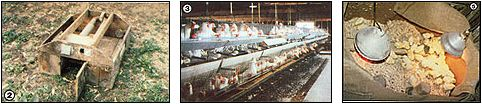

Photos by the Author
LEFT: This old type of wooden brooder uses a kerosene stove or an alcohol lamp in the inner compartment to heat the small pipes on top. Chicks rest directly below the pipe. CENTER: A factory-like atmosphere is typical of many commercial egg producers. RIGHT: Chicks are much safer in a round brooder, underneath ordinary heat lamps